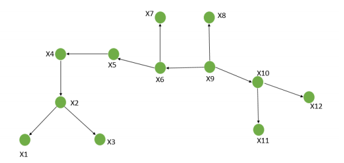

|
Este procedimiento comienza indicando las aristas de G desde i hasta m. en cada paso se escoge una arista, la cual junto con las otras aristas escogidas en los pasos anteriores forman parte del árbol que se está construyendo. Esto es antes de escoger una arista, chequeamos para asegurarnos que su adición al árbol parcialmente formado (el cual en esta etapa es una colección de sub-arboles) no produce ciclo. Si forma ciclo, la arista es rechazada y se considera una arista con índice superior a continuación. Si no forma ciclo, esta arista se adiciona a aquellas que han sido escogidas anteriormente y se continúa con un nuevo paso hasta que se forme un árbol cobertor. |
 |
OVA
Procedimientos para generar un árbol cobertor
Obra publicada con Licencia Creative Commons Reconocimiento Compartir igual 4.0